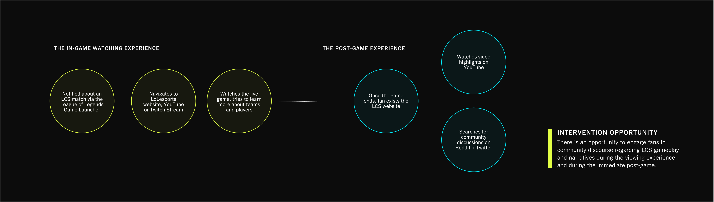

LEAGUE CHAMPIONSHIP SERIES
EXPERIENCE DESIGN
LEAGUE CHAMPIONSHIP SERIES
EXPERIENCE DESIGN
ROLE
DURATION
TEAM
Decision Maker, UI Designer, UX Researcher, Content Designer
January 2023 - April 2023
Jonathan Choi, Dennis Limbo, Claret Egwim
PROJECT OVERVIEW
This is a 6-week project for a senior-design directed study, the premise of this project was to identify an opportunity that can be solved through a design intervention for RIOT Games - League of Legends Championship Series. The intervention needed to be backed by design decisions, evidence and a clear rationale that encompassed both user and business value.
THE INTERVENTION
This project is focused on creating the ultimate fan experience, providing immersive pre-game, live-game and post-game coverage for LCS fans. Our digital intervention features interactive maps, in-game predictions and an elevated chat experience, delivering the ultimate fan engagement.
LEAGUE CHAMPIONSHIP SERIES
The League Championship Series or LCS is the third most-watched sports league in North America behind only the NFL and NBA acting as the premier competition in North America for League of Legends; a competitive video game that has become one of the most popular e-sports on the planet.
Despite the growth of esports, LCS has been experiencing a steadily declining viewership (From 2017 to 2022 the average viewership dropped from 150,254 viewers in 2017 to 123,144 in 2022) with many fans expressing discontent with the league’s “boring product.” There is thus an opportunity to intervene in the pre-watching experience within digital and physical realms in order to increase viewership and engagement.

FRAMING THE PROBLEM SPACE
Through secondary research, insights and user interviews with digital news subscribers, the team was able to develop the scope and focus of our project:
CURRENT JOURNEY OF AN LCS FAN
THE SOLUTION: LCS VIEWERSHIP INCENTIVES
OUR LOLESPORTS INTERVENTION
The following features were developed through an iterative process including two rounds of user testing. User test participants were eager to engage with each immersive component as the possibility of tangible rewards for their engagement increased their overall excitement.
LEARNING FROM THE PROS
Pro View allows viewers to customize their viewing experience by choosing which player's perspective to watch, giving them the ability to focus on specific aspects of the game that interest them the most.
BUZZ BOARD DISCOURSE
By featuring thoughts and comments from social media posts around the community, the Buzz Board invites fans to engage with community discussion by providing them with a platform to engage with each other, share their thoughts and opinions, and connect with the league and its community in a meaningful way.
PREDICT AND REWARD
Through predictions users are immersed in an interactive and personalized experience that rewards their participation and investment in the game. It helps fans feel more connected to the league and its community, and encourages them to stay engaged and invested in the game, even beyond their favorite teams' matches.
THE INTERACTIVE MAP
This allows users to quickly and easily view key moments of the match they just watched, providing a recap of the most exciting and important moments. By providing an interactive and dynamic viewing experience, the interactive map feature encourages users to stay engaged and invested in the game, even after it has ended.
PLAYER HIGHLIGHTS + BTS
The Highlights and BTS tab provides users with an opportunity to learn more about their favorite players and teams on a personal level, creating a deeper connection and attachment to them beyond just their performance in the game.
VALUE FROM INTERVENTION
PHYSICAL ASSETS: THE LCS ARENA
For our assets our aim was to bridge the gap between the online experience and the physical experience of the LCS arena via the predictions feature. Our goal was to test out the scalability and flexibility of our intervention.